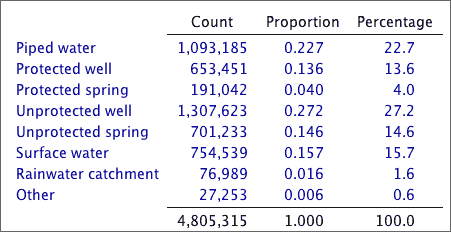

Proportions
The proportions of values in the categories (their relative frequencies) are the frequencies divided by the total number of values.
Percentages
Percentages are simply proportions multiplied by 100. It is usually easier to quickly compare a column of percentages than the corresponding column of proportions.
